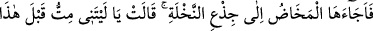
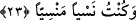

olduğu, sekiz aylık çocukların normalde yaşamayıp sadece Hz. İsa’nın yaşadığı da
söylenmiştir. Bu da başka bir mûcizedir.
Şeyh Muhyiddin İbn Arabî (k.s.) şöyle demiştir: “Menzillerle ilgili yıldızlar içinde
sekiz ay için bir şekil görmedim. Bundan dolayı sekiz aylık iken doğan çocuk yaşamaz
ve ölür. Yaşadığını farz etsek bile kendisine faydası olmayan hastalıklı bir çocuk olur.
Çünkü sekizinci ayda cenîne soğukluk ve kuruluk gibi ölümün tabîatından olan şeyler
galip gelir.
Meryem İsa karnında iken “Onunla” âilesinden “uzak bir yere çekildi.”
Kâşifî der ki: “Meryem (r.anhâ) İlyâ şehrinin uzağında bulunan, şehrin doğu tarafında
bir dağa gitti. Ya da İlyâ şehrinden altı mil uzakta bir vâdîde bulunan Beytülahm’e gitti.”
Hz. Enes (r.a.)’tan rivayet edildiğine göre, İsrâ (mi’rac) hadisinde Rasûlullah (s.a.)
şöyle buyurmuştur: Cebrâil bana: “(Buraktan) in ve namaz kıl.” dedi. Ben de kıldım.
Bunun üzerine “Nerede namaz kıldığını biliyor musun? Meryem oğlu İsa’nın
doğduğu yer olan Beytülahm’de namaz kıldın” dedi.[13] Bu hadîs, Nesâî’nin ve
Delâilü’n-nübüvve’de Beyhâkî’nin rivâyet ettiği sahih veya hasen bir hadîstir.
Ya da “uzak bir yer”, el-İrşâd’da da ifade edildiği üzere evin en uzak tarafı da
olabilir. Hâmilelik süresinin kısalığı dolayısıyla bu mânâ daha uygundur.
Kısâsu’l-enbiyâ’da şöyle denilmiştir: “Meryem’in doğumu yaklaşınca geceleyin
Zekeriyya’nın evinden Beytü’l-makdis’in dışına çıktı. Kendisini Zekeriyya (a.s.)’ın da
başkalarının da bilmesini istemedi.”
23. Doğum sancısı onu, bir hurma dalı(nın altı)na getirdi: “Keşke bundan önce
ölseydim, unutulup gitseydim!” dedi.
“Doğum sancısı onu bir hurma dalı(nın altı)na getirdi” Yani oraya sığınmaya
mecbur etti ki, onunla örtünsün ve doğum anında ona dayansın. Çünkü ona yardım
edecek bir ebe yoktu. el-Kısas’ta şöyle der: “Meryem geceleyin kuru bir hurma ağacı
gördü ve onun dibine oturdu.”
et-Te’vîlâtü’n-Necmiyye’de şöyle der: “Doğum sancısı onu bir hurma dalı(nın
altı)na getirdi” ki, mûcizeyi dalda göstersin.” Bu ağaç kuru bir hurma ağacı idi, meyve
verecek başı ve yeşilliği yoktu. Çünkü mevsim kış idi. Belki de Allah Teâlâ, Meryem’in
korkusunu dindirmek ve bazı alâmetlerini göstermek üzere ona bu ağaca gitmesini ilhâm
etmiştir. Çünkü tomurcuğu olmayan bir hurma ağacı kış ayında meyve vermiştir. Halbuki
hurma soğuğa en az dayanan bir ağaçtır. Hurmanın meyvesi ise aşılandıktan sonra hurma
ağacının özünden olur. Hurma ağacının özü hurmanın başında olan beyaz yumuşak bir
şeydir. Allah Meryem’e loğusaların yiyeceği ve onlar için uygun olan yaş hurma